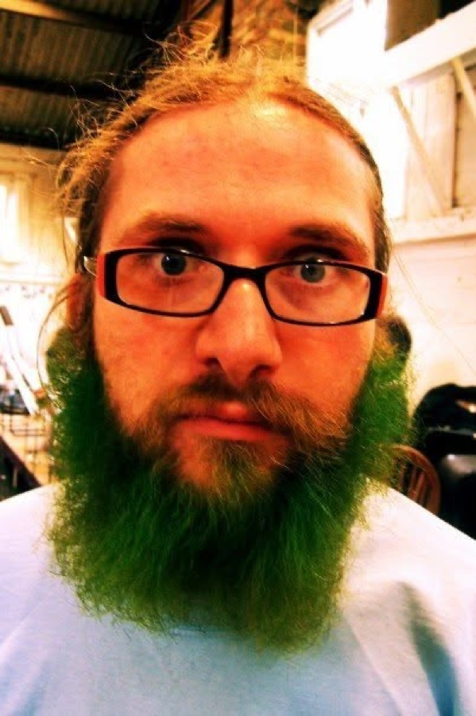

About Utopian Instruments

Utopian Instruments was started by Charlie Wakely, a mathematician, physicist, educator and working musician, after a long search for a particular kind of instrument that never turned up.
There was no shortage of synthesisers. There were cheap ones that were fun for an afternoon, and serious ones that assumed you already knew how they worked. Very little would take someone from first principles all the way to finished music. So Charlie started designing one.
Tessel is the first: a family of small instruments that snap together, each of which can become any of ten, with two free books that take you from your first sound to finished tracks.
What we hold to
Documented from the start
Every instrument comes with complete documentation, written alongside it rather than after it. A new owner should be able to start knowing nothing and build up an understanding of the instrument a step at a time, until they can use all of it, without having to piece it together from forum threads and videos made by people who had to work it out for themselves.
For Tessel, that means two books. Making Sounds gives every kind of unit a chapter of its own, in which you build its sounds from a blank start and find out why each control does what it does. Making Music has you write three tracks in each of seven styles, from techno to synthwave, each one a little more ambitious than the last.
Three jobs for every instrument
Each design has to work in three ways: as a way of learning how sound and synthesis work, as somewhere to experiment and find sounds you didn't know you were after, and as a serious instrument that can hold its own in a finished production. If a design manages only one or two of those, we don't consider it finished.
Yours, completely
When you buy one of our instruments, all of it is yours from the moment it arrives. There are no subscriptions, no accounts needed to unlock anything, and no updates that take away what you paid for.
Theory without the gatekeeping
You don't need a formal musical education to use anything we make. But music theory sits at the heart of all of it, and we won't pretend otherwise. Some things in music are genuinely difficult, and calling them easy doesn't help anyone. What we can do is explain them clearly, in a sensible order and in plain language, so that the difficult parts become manageable.
A note on the originals
The instruments that inspired this range, among them the Minimoog, the DX7 and the TR-808, are amazing instruments. The only way to get the exact sound they made is to play the real thing: an original, or the version its maker builds today. People have spent whole careers carefully reproducing those sounds, and this range doesn't try to compete with that work. It is something different: a way to learn how these ways of making sound work, and how music is made with them, by getting your hands on the controls. It is not an attempt to rip off the hard work of the people who designed those instruments, or of the people who have spent years recreating them.
Minimoog is a trademark of Moog Music, DX7 of Yamaha and TR-808 of Roland. This range is not connected with or endorsed by any of them.
Credits and licences
Tessel uses other people's work only where its authors invite it, and credits them all.
Open303, by Robin Schmidt
Volt's ACID mode uses its measured figures and filter equations (the filter equations published by "mystran" and "kunn" on the KVR forum).
Copyright (c) 2009 Robin Schmidt (www.rs-met.com)
Permission is hereby granted, free of charge, to any person obtaining a copy of this software and associated documentation files (the "Software"), to deal in the Software without restriction, including without limitation the rights to use, copy, modify, merge, publish, distribute, sublicense, and/or sell copies of the Software, and to permit persons to whom the Software is furnished to do so, subject to the following conditions:
The above copyright notice and this permission notice shall be included in all copies or substantial portions of the Software.
THE SOFTWARE IS PROVIDED "AS IS", WITHOUT WARRANTY OF ANY KIND, EXPRESS OR IMPLIED, INCLUDING BUT NOT LIMITED TO THE WARRANTIES OF MERCHANTABILITY, FITNESS FOR A PARTICULAR PURPOSE AND NONINFRINGEMENT. IN NO EVENT SHALL THE AUTHORS OR COPYRIGHT HOLDERS BE LIABLE FOR ANY CLAIM, DAMAGES OR OTHER LIABILITY, WHETHER IN AN ACTION OF CONTRACT, TORT OR OTHERWISE, ARISING FROM, OUT OF OR IN CONNECTION WITH THE SOFTWARE OR THE USE OR OTHER DEALINGS IN THE SOFTWARE.
QR Code generator library, by Project Nayuki
The test shows a unit's results as a QR code with it (version 1.8.0, unchanged).
Copyright (c) Project Nayuki. (MIT License)
Permission is hereby granted, free of charge, to any person obtaining a copy of this software and associated documentation files (the "Software"), to deal in the Software without restriction, including without limitation the rights to use, copy, modify, merge, publish, distribute, sublicense, and/or sell copies of the Software, and to permit persons to whom the Software is furnished to do so, subject to the following conditions: the above copyright notice and this permission notice shall be included in all copies or substantial portions of the Software. The Software is provided "as is", without warranty of any kind, express or implied, including but not limited to the warranties of merchantability, fitness for a particular purpose and noninfringement. In no event shall the authors or copyright holders be liable for any claim, damages or other liability, whether in an action of contract, tort or otherwise, arising from, out of or in connection with the Software or the use or other dealings in the Software.
Samples in the starter set
- "Pearl Master Studio Pack 1" by enoe, Creative Commons Attribution 3.0, via oramics/sampled: Taste's STUDIO KIT. (Pearl is a trademark of its owner, named here only as the licence's credit.)
- "Rain on window loop" by alxl, CC0 (OpenGameArt): Grit's RAIN CLOUD and the starter set's RAIN.
- "Short Choir" by Breviceps (Freesound) and "WordSample.wav" by pyro13djt (Freesound), both CC0: the starter set's CHOIR and WORDS.
Raspberry Pi
The units' processor layout follows Raspberry Pi's RP2350B reference design (MIT licence, Raspberry Pi Ltd).
Typefaces
Karla and Space Grotesk, under the SIL Open Font Licence. The hand-writing on the standard panels in our pictures, and on the Try it page, is Caveat Brush by Impallari Type, also under the SIL Open Font Licence.
SDL_ttf and FreeType
The Try it page draws that hand-writing with SDL_ttf (zlib licence, Sam Lantinga and contributors) and FreeType. Portions of this software are copyright © The FreeType Project (www.freetype.org). All rights reserved.